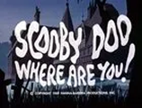
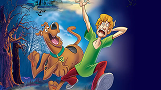
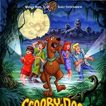
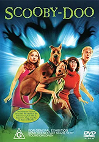

Scooby-Doo, Cadê Você?
A série original que começou tudo! Apresenta a fórmula clássica da gangue desvendando mistérios em mansões assombradas.

O Que Há de Novo, Scooby-Doo?
Atualizou a franquia para os anos 2000, mantendo o tom divertido com trilha sonora pop/rock icónica.

Scooby-Doo na Ilha dos Zumbis
O filme de animação mais famoso e aclamado. Foi o divisor de águas onde os monstros eram reais pela primeira vez, com visual mais maduro.

Scooby-Doo
Após desavenças separarem a Mistério S/A por dois anos, o grupo é contratado individualmente pelo dono do resort Ilha do Espanto para investigar por que os jovens visitantes estão agindo como zumbis.